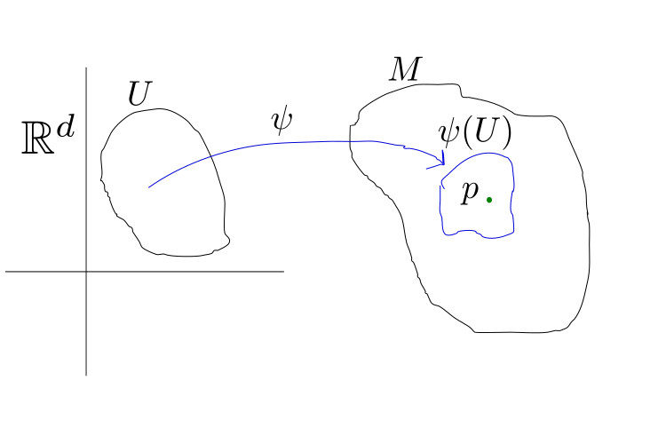

1. Repaso de Variedades diferenciables¶
1.1. Variedades diferenciables¶
Sea \(M\) un espacio topológico, Hausdorff, \(N_{2}\), localmente euclideo de dimensión \(d\), \(\forall p \in M,\exists U \text{ abierto de } \mathbb{R}^{d}\) y un homeomorfismo \(\psi:U \to M, p \in \psi(U)\)
{kind=link}
Si \(\varphi:U \subset M\to\mathbb{R}^{d}, p \in \varphi(U)\) es un homeomorfismo (\(U\) abierto en \(M\)) entonces \((U,M)\) se llama sistema de coordenadas.

1.2. Variedad Diferenciable¶
Definición: Una estructura diferenciable \(\mathcal{F}\) en \(M\) es una colección de sistemas de coordenadas \(\{(U_{\alpha},M_{\alpha})|\alpha\in A\}\) tal que
\(M = \displaystyle\bigcup_{\alpha \in A} U_{\alpha}\)
Si \((U,\varphi_{1})\) y \((U,\varphi_{2})\) son dos sistemas de coordenadas en \(\mathcal{F}\). Entonces \(\varphi_{2}\circ\varphi_{1}^{-1}:\varphi_{1}(U\cap V)\to\varphi_{2}(U\cap V) \subseteq \mathbb{R}^{d}\) es \(C^{\infty}\) y tiene inversa \(C^{\infty}\).
La colección \(\mathcal{F}\) es maximal con respecto a 2.
\((M,\mathcal{F})\) es una variedad diferenciable.
1.3. Funciones Diferenciables¶
Sea \(U \subset M\), \(U\) abierto. Decimos Si \(f:U \to\mathbb{R}\) es \(C^{\infty}\) sobre \(U\) si \(f\circ\varphi^{-1}:\varphi(U\cap V) \subseteq \mathbb{R}^{d}\to\mathbb{R}\) es \(C^{\infty}\), \(\forall (U,\varphi)\) sistema de coordenadas.
Si \(F: M \to N\) es continua entre dos variedades \(M \text{ y } N\)
Entonces \(F\) es \(C^{\infty}\) si \(\psi \circ F \circ \varphi^{-1}\) es \(C^{\infty}\) donde \((U,\varphi)\) es un ssistema de coordenadas en \(M\) y \((V,\psi)\) es un sistema de coordenadas en \(N\).
Si \(F: M \to N\) es \(C^{\infty}\), es \(1-1\) y suryectiva decimos que f es un difeomorfismo con inversos en \(C^{\infty}\).
{kind=link}
{kind=link}
1.4. Vectores (ver Warner)¶
Sea \(M\) una variedad y \(m \in M\). Sea \(C^{\infty}_{m}\) el conjunto de funciones \(f:M \to\mathbb{R}\) de clase \(C^{\infty}\) en el punto \(m\in M\) \(\leftarrow\) es un álgebra.
Un vector \(v\) en el punto \(m \in M\) es una derivación lineal de \(C^{\infty}_{m}\):
a). \(v(f+\lambda g)=v(f)+\lambda v(g)\)
b). \(v(f\cdot g)=v(f)g(m)+f(m)v(g)\)
\(M_{m}\) denota el conjunto de todos los vectores tangentes a \(m\).
Definición: \(M_{m}\) es el espacio tangente a \(M\) en \(m\).
Ejercicio: Verificar que \(M_{m}\) es un \(\mathbb{R}\)-espacio vectorial.
1.5. Diferencial¶
Sea \(F:M \to N\) de clase \(C^{\infty}\) y sea \(m \in M\). El diferencial de \(F\) es una aplicación lineal que va desde el espacio tangente a \(M\) en \(m\) al espacio tangente a \(N\) en \(F(m)\), es decir,
Definición:
Nota
Vamos a explicar la Definición.
Queremos evaluar a \(dF\) en algo que esté en \(M_{m}\) (el espacio tangente a \(M\) en \(m\)), que está formado por vectores \(v\). Ahora queremos que \((dF)(v)\) sea un vector sobre \(N\), entonces como va a ser un vector en \(N_{F(m)}\) (el espacio tangente a \(N\) en \(F(m)\)), tiene que ser algo que actúe en funciones que sean de clase \(C^{\infty}\) al rededor de \(N_{F(m)}\). Por lo tanto, voy a evaluar \((dF)(v)\) en una \(f: N \to \mathbb{R}\), es decir,
Esto va a ser igual a evaluar el vector \(v\) en funciones sobre \(M\), entonces lo hacemos sobre \(f\circ F:M \to \mathbb{R}\), \(\forall f \in C^{\infty}_{F(m)}\). Luego,
está definida.
1.6. En coordenadas¶
Sea \((U,\varphi)\) un sistema de coordenadas con funciones coordenadas \(x_{1}, x_{2}, x_{3}, \dots, x_{d}\), en la variedad \(M\) y \(m\in M\)
\(\displaystyle\left( \frac{\partial}{\partial x_{i}} |_{m} \right) f = \frac{\partial (f\circ \varphi^{-1})}{\partial r_{i}}\) es un vector.

Importante
Probar que las esferas \(S^{d}\) son variedades.
Ver los Ejemplos de la página 7 del libro de Warner. En particular, el Ejemplo g de Variedad Producto.